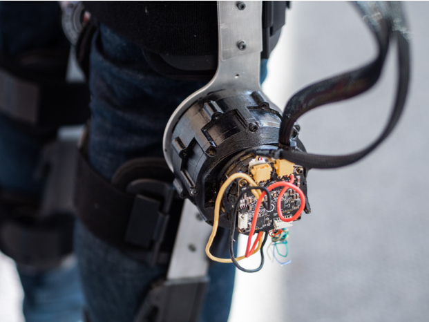
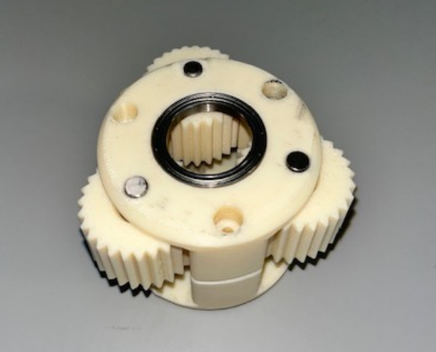
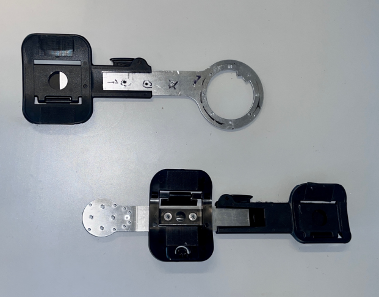

T-BLUE Exoskeleton Backdrivable Actuators for Locomotor Assistance
Preliminary development of a modular, bilateral robotic hip-knee exoskeleton with open-source 3D-printed quasi-direct drive actuators — designed to provide energy-efficient, compliant locomotor assistance and rehabilitation to persons with mobility impairments.


Left: Fully assembled T-BLUE exoskeleton Right: 3D-printed quasi-direct drive actuator.
Project Overview
A modular exoskeleton built from open-source hardware
T-BLUE is a bilateral robotic hip-knee exoskeleton developed at the University of Toronto to support the design and testing of novel controllers and rehabilitation protocols for activities of daily living. The system targets populations who could benefit from partial locomotor assistance — particularly older adults and persons with osteoarthritis — rather than the complete-paralysis use case that dominates commercial devices.
The design retrofits commercially available Breg T-Scope Premier postoperative orthoses with 3D-printed quasi-direct drive actuators originally open-sourced by the University of Michigan. This approach kept total hardware cost to roughly $5,100 CDN including machining, while achieving backdrivability, low output impedance, and energy-efficient compliant motion.
Actuator Design
Quasi-direct drives for backdrivability and efficiency
The actuators use a Wolfrom compound-planetary transmission with a 15:1 gear ratio and 30° pressure angle profile. High-torque density T-Motor R150 brushless DC motors paired with this low gearing yield low output impedance — allowing the joints to be backdriven by the user — and peak torques up to 38.2 Nm, comparable to lower-limb exoskeleton requirements.
External actuator housings were printed in ASA on a Fortus 450MC 3D-printer (±0.127 mm accuracy). Components near the motor — the sun gear and motor housing — used ULTEM 1010 resin for its higher thermal resistance, mitigating heat degradation risks. The R150 rotor magnet was press-fitted into the sun gear, which meshes with the inner planetary gear assembly.
The backdrivability of quasi-direct drives enables volitional control, letting the user actively move the joints — a key advantage for rehabilitation and user engagement over highly-geared rigid actuators.

Inner planetary gear assembly — 3 planetary gears, dowel pins, and bearings secured by upper and lower carrier halves.
Electrical System
CAN bus control via Mjbots Moteus
Motor control used Mjbots Moteus r4.8 brushless motor controllers with magnetic absolute encoders and an Mjbots pi3hat, enabling a Raspberry Pi 3b+ to communicate with all motor controllers over CAN. The daisy-chainable CAN bus simplified wiring across four actuators. Two 5-cell 3300 mAh lithium polymer batteries in parallel powered the system, with power distribution handled by the Mjbots distribution board for real-time telemetry and safe per-controller delivery.
Motor configuration and debugging used the moteus_gui Python package, while runtime control used moteus and moteus-pi3hat. Future work will integrate two additional IMUs via I2C to improve state estimation for controller development.
Mechanical Integration
Retrofitted orthoses and machined aluminum struts
The mechanical design builds on the M-BLUE design from the University of Michigan, customized in SolidWorks for the larger actuator diameter. Outer support struts on the postoperative orthoses were removed and replaced with waterjet-cut 7075 aluminum struts — selected for high strength and fatigue resistance under repeated mechanical loading. The actuators mount laterally at the knee and hip joints.
Fitting challenges arose from the medial-facing metal bearings of the actuators not sitting flush with the 3D-printed housing, creating extra clearance against the struts. Custom 3D-printed shim parts resolved the gap, and orthosis straps were reattached to complete the wearable assembly.

Adapted design with machined aluminum struts and postoperative orthosis padding.
Challenges & Lessons
Precision, tolerances, and assembly discipline
Reproducing open-source hardware at this precision level surfaced several practical challenges. Manually press-fitting bearings into the planetary gear assembly damaged the metal ball bearings, increasing rotational resistance and in some cases damaging gears — ultimately requiring outsourcing to a machine shop with a hydraulic press. Dowel pins had geometric tolerances of 0.004 to 0.012 mm against the 3D-printer's ±0.127 mm accuracy, making consistent press-fits extremely sensitive.
Screw hole threading was another recurring issue: ASA and ULTEM 1010 fibers deteriorate under repeated screw insertion, risking mechanical slippage during actuation. Metal inserts are a planned improvement for future iterations. The differences in actuation smoothness across the four built actuators made these tolerance effects physically observable.
A key takeaway mirrored what the drone capstone taught: open-source hardware reproduction is largely a precision and process discipline problem. The designs work — similar actuators logged 420,000+ simulated gait strides with minimal performance degradation — but achieving that consistency requires tooling, iteration, and careful attention to assembly order.